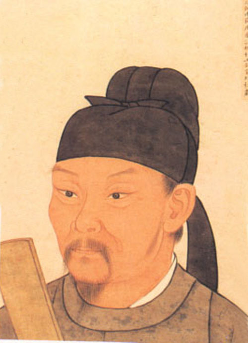

李白
李白，字太白，号青莲居士，又号“谪仙人”，唐代伟大的浪漫主义诗人，被后人誉为“诗仙”。
其诗歌风格豪放飘逸、意境奇妙，充满浪漫主义色彩。
他一生渴望入仕，却又蔑视权贵，追求自由。代表作有《望庐山瀑布》《行路难》《蜀道难》等。在《望庐山瀑布》中，“飞流直下三千尺，疑是银河落九天”，以夸张的手法描绘出庐山瀑布的雄伟壮观，令人惊叹。

李白，字太白，号青莲居士，又号“谪仙人”，唐代伟大的浪漫主义诗人，被后人誉为“诗仙”。
其诗歌风格豪放飘逸、意境奇妙，充满浪漫主义色彩。
他一生渴望入仕，却又蔑视权贵，追求自由。代表作有《望庐山瀑布》《行路难》《蜀道难》等。在《望庐山瀑布》中，“飞流直下三千尺，疑是银河落九天”，以夸张的手法描绘出庐山瀑布的雄伟壮观，令人惊叹。
杜甫，字子美，自号少陵野老，唐代伟大的现实主义诗人，与李白合称“李杜”。
他的诗歌风格沉郁顿挫，反映社会现实深刻，充满忧国忧民之情。
杜甫生活在唐朝由盛转衰的时期，经历了安史之乱，其诗作多反映战争给人民带来的痛苦和社会的动荡不安。代表作有《登高》《春望》《茅屋为秋风所破歌》等。《春望》中“国破山河在，城春草木深。感时花溅泪，恨别鸟惊心”，生动地描绘了战乱后的凄凉景象，表达了诗人对国家和亲人的深切思念。
王维，字摩诘，号摩诘居士。
他是唐代山水田园诗派的代表人物，诗歌风格清新自然、空灵静谧，充满禅意。
王维精通诗、书、画、音乐等多种艺术形式，其诗歌常以自然景物为描绘对象，传达出一种超脱尘世的心境。代表作有《山居秋暝》《鸟鸣涧》等。《山居秋暝》“空山新雨后，天气晚来秋。明月松间照，清泉石上流”，营造出一种清幽、闲适的意境，体现了诗人对自然的敏锐观察力和独特感受。